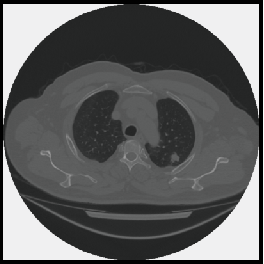
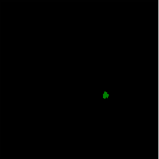
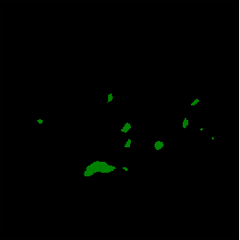

We evaluated DistillFSS on a new CD-FSS benchmark spanning 7 datasets across medical, industrial, and remote sensing domains. The tables below report mean Intersection over Union (mIoU) scores, demonstrating that DistillFSS consistently achieves state-of-the-art performance, especially in multi-shot settings.
Qualitative Results
Visualizing segmentation results on the proposed CD-FSS benchmark (Medical, Industrial, Remote Sensing).
Lung Nodule (Medical)
Query

GT

DMTNet

DistillFSS
